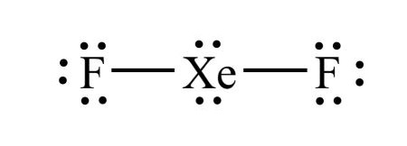

1) Place the following bonds in order of increasing ionic character.
Si-P Si-Cl Si-S
A) Si-Cl < Si-S < Si-P
B) Si-P < Si-Cl < Si-S
C) Si-P < Si-S < Si-Cl*
D) Si-Cl < Si-P < Si-S
The bond with the lowest ionic character will be the between elements closest on the periodic table. Since Si and P are the closest on the periodic table, they will have the lowest ionic character. Since Si and S are the next closest, they will have the second to lowest ionic character. Si and Cl are the furthest on the periodic table, so they will have the largest ionic character.
2) What is the VSEPR shape (electron domain geometry) of SF4?
A) Trigonal bipyramidal*
B) Tetrahedral
C) Trigonal planar
D) Octahedral
Since the Lewis structure of SF4 has 5 electron domains, the VSEPR shape (electron domain geometry) of SF4 is trigonal bipyramidal.
3) Which of the following shows the best Lewis structure for OCl2?
A)
B)
C)
D) *
Oxygen has 6 valence electrons and chlorine has 7 valence electrons. Both oxygen and chlorine must have an octet. is the only structure with the correct number of electrons (6 + 7 + 7 = 20), where both oxygen and chlorine have an octet.
4) Is H2O polar or nonpolar?
A) Nonpolar
B) Polar*
Since H2O is bent (which is an asymmetrical shape), H2O will be polar.
5) What is the molecular shape of H2O?
A) Bent*
B) Tetrahedral
C) Trigonal pyramidal
D) Trigonal planar
Since the Lewis structureof H2O has 4 electron domains, 2 of which are lone pairs, the molecular shape of H2O is bent.
6) What is the VSEPR shape (electron domain geometry) of BH3?
A) Linear
B) Bent
C) Trigonal planar*
D) Tetrahedral
The Lewis structure for BH3 has 3 electron domains, so the VSEPR shape (electron domain geometry) of BH3 is trigonal planar.
7) What is the molecular shape of XeF4?
A) Octahedral
B) See saw (saw horse)
C) Square pyramidal
D) Square planar*
Since the Lewis structure of XeF4 has 6 electron domains, 2 of which are lone pairs, the molecular shape of XeF4 is square planar.
8) Which of the following elements is the least electronegative.
A) Iodine*
B) Bromine
C) Chlorine
D) Fluorine
The trend for electronegativity is that it increases as you go up and to the right on the periodic table. However, noble gasses have an electronegativity of approximately zero, so fluorine has the highest electronegativity. Thus in this case, iodine is the least electronegative.
9) Is SF6 polar or nonpolar?
A) Nonpolar*
B) Polar
Since SF6 is octahedral (which is a symmetrical shape), the electronegativities of the six fluorines balance out and SF6 is nonpolar.
10) What is the VSEPR shape (electron domain geometry) of CH4?
A) Bent
B) Linear
C) Trigonal planar
D) Tetrahedral*
Since the Lewis structure of CH4 has 4 electron domains, the VSEPR shape (electron domain geometry) of CH4 is tetrahedral.
11) What is the molecular shape of SeF6?
A) Tetrahedral
B) Trigonal planar
C) Trigonal bipyramidal
D) Octahedral*
Since the Lewis structure of SeF6 has 6 electron domains, none of which are lone pairs, the molecular shape of SeF6 is octahedral.
12) Which compound has the smallest dipole moment in the gas phase?
A) CO
B) HCl
C) Cl2*
D) LiF
The smallest dipole moment will be between the two elements that have the smallest difference in electronegativity. Generally speaking the elements with the smallest difference in electronegativity will be closest on the periodic table. However, you should remember that hydrogen has an electronegativity that is around that of metalloids. In other words, it is low for a nonmetal.
13) Which of the following compounds is nonpolar?
A) IF5
B) SiS2*
C) NHO
D) PH2F
SiS2 is linear shaped, which is a symmetrical shape. That means the sulfurs electronegativities will balance out and SiS2 will be nonpolar.
14) What is the molecular shape of NHO?
A) Linear
B) Trigonal planar
C) bent*
D) Tetrahedral
Since the Lewis structure of NHO has 3 electron domains, and 1 of them is a lone pair, the molecular shape of NHO is bent.
15) What is the VSEPR shape (electron domain geometry) of CO2?
A) Linear*
B) Tetrahedral
C) Bent
D) Trigonal planar
Since the Lewis structure of CO2 has 2 electron domains, the VSEPR shape (electron domain geometry) of CO2 is linear.
16) Which of the following compounds is polar?
A) CO2
B) NH3*
C) CCl4
D) SiF4
NH3 is trigonal pyramidal shaped which is not a symmetrical shape, thus NH3 will be polar.
17) Which of the following shows the best Lewis structure for XeF2?
A)
B)
C) *
D) 
Xe has 8 valence electrons and F has 7 valence electrons. Xe (being below the 2nd period) can get more than an octet, but F needs an octet. The formal charges need to be as close to zero as possible. is the only structure with the correct number of electrons (8 + 7 + 7 = 22) where the formal charges on all elements is zero.
18) Identify the longest bond.
A) Double covalent bond
B) Triple covalent bond
C) Single covalent bond*
D) All bonds are the same length
Triple bonds are stronger than double bonds, which are stronger than single bonds.
19) What is the molecular shape of ClF3?
A) Trigonal bipyramidal
B) Octahedral
C) See saw (saw horse)
D) T-shape*
Since the Lewis structureof ClF3 has 5 electron domains, two of which are lone pairs, the molecular shape of ClF3 is T-shaped.
20) Which of the following bonds is least polar?
A) H-I*
B) HCl
C) H-F
D) HBr
The least polar bond will be the one with the smallest dipole moment.
The smallest dipole moment will be between the two elements that have the smallest difference in electronegativity. Generally speaking the elements with the smallest difference in electronegativity will be closest on the periodic table. However, you should remember that hydrogen has an electronegativity that is around that of metalloids. In other words, it is low for a nonmetal.


 *
*